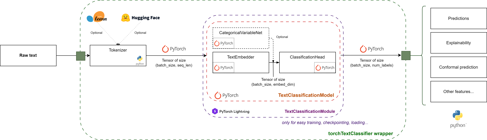

import torch
import torch.nn as nn
import torch.optim as optim
class MyModel(nn.Module):
def __init__(self, input_dim):
super(MyModel, self).__init__()
# Notre couche linéaire : z = Wx + b
self.linear = nn.Linear(input_dim, 1)
# La fonction d'activation Sigmoïde pour la classification binaire
self.sigmoid = nn.Sigmoid()
def forward(self, x):
# Passage des données dans le réseau
z = self.linear(x)
return self.sigmoid(z)
# 3. Fonction de perte et optimiseur
criterion = nn.BCELoss()
optimizer = optim.SGD(model.parameters(), lr=0.01)TorchTextClassifier :
un framework unifié pour la codification de textes libres
Séminaire DMS
12 mars 2026
Contexte et historique
Contexte
- Codification de texte court dans des nomenclatures hiérarchiques avec des centaines de classes
- COICOP : “XXL ESSUIE-TOUT 5.19 X 1” ➡️ 05.6.1.9 (Autres biens domestiques non durables (ND))
- APE : “Professionnelle du langage, je retranscris des textes et conversations de la langue française vers la langue portugaise et réciproquement.” ➡️ 7430Z (Traduction et interprétation)
- Variables additionnelles disponibles comme facteurs prédictifs
- Besoin d’explicabilité et d’indicateurs de qualité
fastText : en production, mais archivé
- fastText : le go-to pour la classification de texte à l’Insee
- Efficace, performant, mis en production en 2021 pour la codification APE…
- …mais repo archivé depuis le 19/03/2024
Enjeux
- La non-maintenance de la librairie : à terme, risques de maintenance, de compatibilité…
- Surtout : freine les possibilités de modernisation
- Dans le même temps, un éco-système deep learning/ NLP très dynamique: PyTorch, Hugging Face…
2024 : passage à PyTorch !
- Modèle PyTorch proche du modèle fastText : transition en douceur
- On en parlait ici
- PyTorch permet de customiser l’architecture et l’adapter à nos besoins (gestion des variables catégorielles)
- Meilleur monitoring de l’entraînement
- Opportunités de modernisation: explicabilité, calibration, modèles plus performants…
- Un package pour séparer la définition du modèle de son usage
de torchFastText à torchTextClassifiers
- évolution du package initial vers une boite à outils (ou un framework unifié) de la classification de texte avec variables catégorielles
- conceptualisation des différents composants d’un modèle de classification de texte
- connexion avec l’eco-système Hugging Face
Pytorch et Deep Learning
C’est quoi un modèle de classification de texte ?
Tokenizer
Avant même de rentrer dans le modèle de deep learning, on découpe la phrase d’entrée et on associe chaque “morceau” à un entier.
La tokenization est un art en soi et différents algorithmes existent pour découper de la bonne façon.
Une tokenization basique : un mot = un token
Deep learning: rappel
- Un modèle de deep learning, c’est un régresseur paramétrique \(f_{\theta}\) de Y sur X: comme une régression linéaire/logistique, mais pas comme les arbres/modèles ensemblistes
- \(f_{\theta}\) n’est qu’une composition d’opérations matricielles (donc linéaires, différentiables) et éventuellement d’autres opérations différentiables (fonctions d’activation). Les paramètres sont les valeurs des matrices.
- on minimise \(\frac{1}{n} \sum l(f_{\theta}(X_i), y_i)\), où \((X_i, y_i)_{i=1 \dots n}\) les données d’entraînement et \(l\) une fonction de perte (souvent la negative log likelihood mais pas forcément !) via une descente de gradient stochastique (ou variante)
Embedding
Il faut transformer les indices donnés par le tokenizer en des vecteurs comestibles par le modèle.
Solution naïve: one-hot, mais trop sparse, trop grande dimension (taille du vocabulaire).
Donc on projette dans un espace de plus petite dimension (embedding):
\(\text{Embeddings} = M_{\theta}^T \text{One-hot}\)
où :
- \(M_{\theta} \in \mathbb{R}^{n_{vocab}, d_{embed}}\) est la matrice d’embedding, entraînable
- \(\text{One-hot} \in \mathbb{R}^{n_{vocab}, seq\_len}\)
Ceci est une opération linéaire !
Classifieur linéaire
\(\text{Predictions} = W_{\theta} * \text{Embeddings}\)
où :
- \(W_{\theta} \in \mathbb{R}^{d_{embed}, n_{labels}}\) est la matrice d’embedding, entraînable
Encore une simple multiplication de matrices.
Entraînement
\(\theta^{*} \in \arg \min \frac{1}{n} \sum - \text{LogSoftmax}(\text{Predictions}_{\text{Labels_{i}}})\)
fastText, c’était quoi ?
Une librarie Python (sur un backed en C), qui proposait:
- un algorithme de tokenization particulier (n-gram)
- une architecture, la plus minimale possible : Embedding puis classification linéaire
- seulement deux fonctions de perte (CrossEntropy et One Vs All)
- sous une forme monolithique, avec très peu de customisation possible
PyTorch : ce que c’est et pourquoi on l’a choisi
- Le framework désormais standard pour faire des réseaux de neurones
- Permet, entre autres, de :
- créer votre propre modèle \(f_{\theta}\), input/output complètement libres, de n’importe quelle dimension
- Par exemple des images, qui sont en fait des matrices 3D \((C, H, W)\) (cf projet images satellites)
- créer votre propre fonction de perte ou utiliser une des nombreuses pré-proposées
- utiliser des algorithmes d’optimisation divers
- créer votre propre modèle \(f_{\theta}\), input/output complètement libres, de n’importe quelle dimension
Et TTC alors ?
- On cadre un peu la liberté offerte par PyTorch pour se recentrer sur la classification de texte
- Manipulation d’objets PyTorch “pré-conçus”, standardisés
- Mais en laissant beaucoup de liberté architecturale (contrairement à fastText)
- On connecte avec les tokenizers (qui ne sont pas proposés par PyTorch mais par HuggingFace)
TorchTextClassifiers: Architecture et fonctionnalités
Architecture

Features
- explicabilité
- multilabel
- modulable …
Utilisation en pratique
Codification COICOP
Contexte
Coder des libellés de produits dans la nomenclature COICOP au niveau 4 (sous classe)
Les libellés proviennent en très grande majorité de scan/photos de tickets de caisse.
SAUCISSES DE STRASBOURG 350G X 10 S PROMO 1 X 2.45€/UNITE
LAIT MILA BRIQ 1L 1/2 ECREME
BEUR MOULE DS804 P BRETON 125Idée initiale: Entrainer un modèle (type FastText) sur les données de caisse

DEMO ➡️
Codification APE
DEMO ➡️
Perspectives
Fin
Questions ?